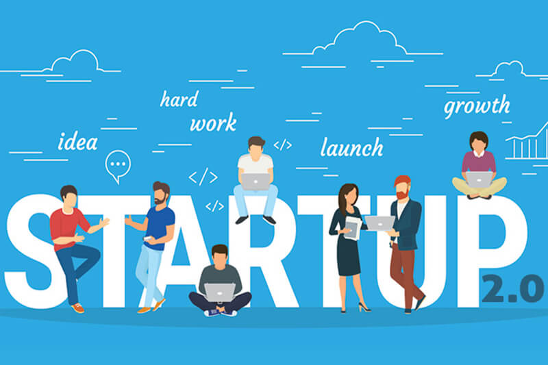

Startup Cell
The Start-up cell in Bit ,sindri is established on 16th January 2018. The cell with its team of mentors, coordinators and E-cell student volunteers of the institute is meant for nurturing the potential start-up ideas that will cater need of both tech and non-tech solution to various social, economic and industrial problems of the nation Although the ecosystem for the same exists in the institute as the
A startup cell, often referred to as a startup incubator or accelerator, is an organization or facility designed to support and nurture early-stage startups and entrepreneurs. It offers a range of resources, mentorship, and services to help startups grow and succeed. Here's a brief overview of what a startup cell typically provides:
Startup cells usually provide access to experienced mentors and advisors who can offer guidance and support. These mentors often have extensive experience in entrepreneurship, industry-specific knowledge, and can help startups make informed decisions.
Access to Funding: Many startup cells have networks with angel investors, venture capitalists, and other sources of funding. They can help startups pitch their ideas and secure the necessary capital for growth.
Educational Resources: Startup cells may offer workshops, seminars, and educational programs to help startups build essential business skills and knowledge.
at there is a demand for their product or service in the market.Structured Programs: Many startup cells run structured accelerator or incubator programs that have a specific duration (e.g., 3-6 months) and offer focused support, including mentorship, training, and access to investors.
Equity or Investment: Some startup cells invest in the startups they support in exchange for equity, while others provide their services free of charge or for a fee. The structure can vary from one cell to another.
Community: They foster a sense of community among entrepreneurs, which can be essential for motivation, sharing experiences, and overcoming challenges.
Startup cells play a vital role in fostering innovation, helping entrepreneurs turn their ideas into viable businesses, and contributing to economic development by creating jobs and new products and services. They exist in many forms, from government-sponsored initiatives to private organizations and corporate accelerators, each with its unique focus and resources.
Business Support Services: They often provide administrative support, legal and financial services, marketing advice, and other resources to help startups with day-to-day operations.
neurs turn their ideas into viable businesses, and contributing to economic development by creating jobs and new products and services. They exist in many forms, from government-sponsored initiatives to private organizations and corporate accelerators, each with its unique focus and resources.
Startup BIT
Startup Cell creates a vibrant and dynamic Startup Ecosystem on the college campus by playing the role of pre-incubator. It promotes and facilitates a support system for innovative and entrepreneurial students and faculties in converting their ideas into tech solutions.
Achievements
TYPES OF STARTUP
Unicorns
In the context of business and startups, a "unicorn" is a term used to describe a privately held startup company that has achieved a valuation of $1 billion or more. The term is used to highlight the rarity of such companies, as they are relatively scarce in the business world. Unicorns are often associated with rapid growth, disruptive technologies, and significant market impact. Companies that reach unicorn status are typically closely watched by investors and the tech industry as potential game-changers.

small business
Small business startups are simple; they feature people who work for themselves instead of a traditional company that might employ someone in their profession. Examples include handymen, personal trainers, and boutique owners. These businesses aren’t meant to make it big or change the world, they are intended to provide financial compensation to the owner. The business is the owners source of income.
large business
Large businesses must continuously innovate due to the shifting environment. They are supposedly large-scale startups. These companies will have an infinite lifespan if they continue to innovate in response to new competition, changes in customer tastes and preferences, and technological advancement. They have the potential to become a driving force for more disruptive innovation. Google and Android are two such startups. New markets are responsible for engaging customers with the sale of new goods and services..

Social startup
Social startups are the sixth type of startup. The purpose of social startups is not to create a sustainable business but to positively impact society and the economy. These startups aim to make the world a better place to live. They are less passionate and ambitious about earning profits when compared to other founders. In short, they provide donations, grants, and charities to build positive social and environmental change worldwide.
.jpeg)

.jpeg)
.jpeg)
.jpeg)